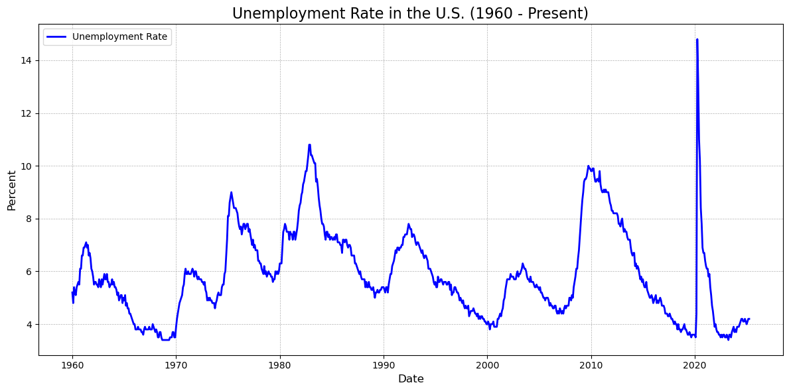
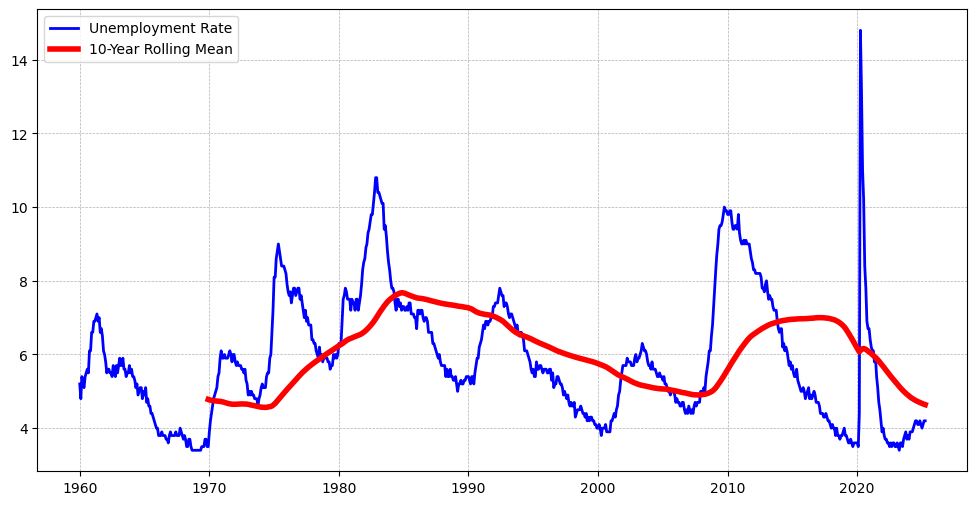
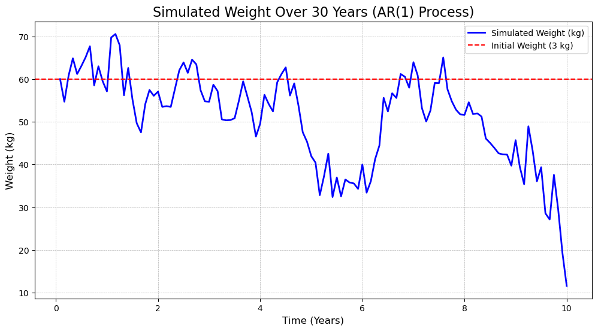
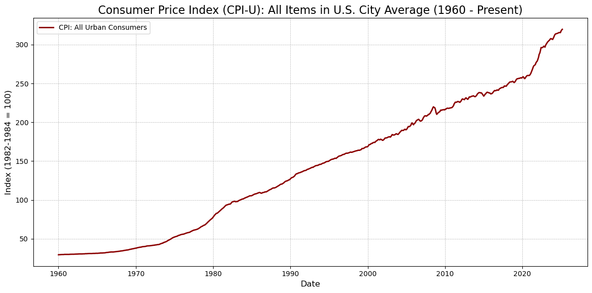
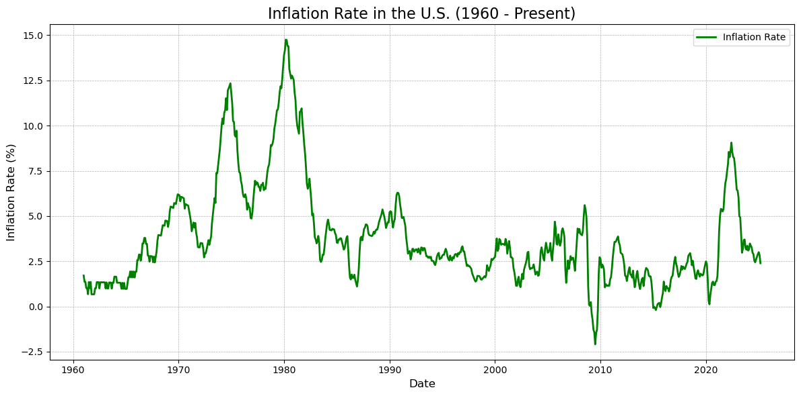
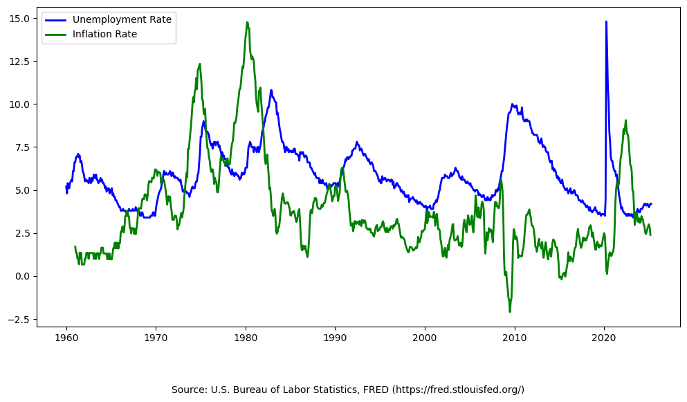
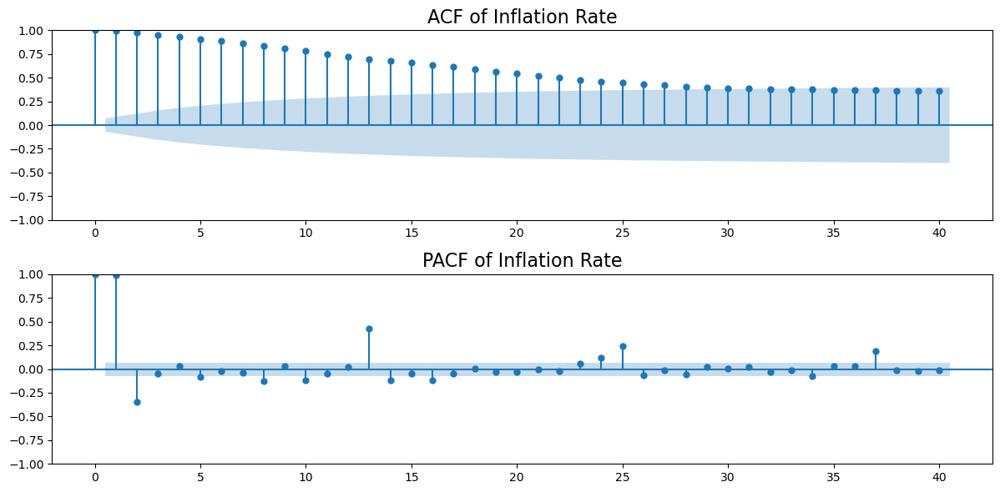

# 基本设定
import pandas as pd
import matplotlib.pyplot as plt
from pandas_datareader.data import DataReader
import datetime
import warnings
warnings.filterwarnings("ignore") # 屏蔽警告信息
# 设置起止日期 (后续其他宏观变量也采用这个设置)
start_date = datetime.datetime(1960, 1, 1)
end_date = datetime.datetime.today()
start_year = start_date.year获取宏观数据
本讲以 pandas_datareader 为例，介绍如何获取宏观数据。
FRED 是美国联邦储备银行提供的宏观经济数据，包含了大量的经济指标。 FRED 提供了一个 API 接口，可以通过 pandas_datareader 来获取数据。
本文写作过程中借助了 AI，包括 ChatGPT (提示词) 和 Github Coplilot。
下载美国失业率数据
Source: U.S. Bureau of Labor Statistics, Unemployment Rate [UNRATE], retrieved from FRED, Federal Reserve Bank of St. Louis; https://fred.stlouisfed.org/series/UNRATE, May 5, 2025.
# 失业率
# 从 FRED 获取“Unemployment Rate”数据（代码为 UNRATE）
df_unemp = DataReader("UNRATE", "fred", start_date, end_date)
# 绘图
plt.figure(figsize=(12, 6))
plt.plot(df_unemp.index, df_unemp["UNRATE"],
color='blue', linewidth=2, label='Unemployment Rate')
# 图形美化
plt.title(f"Unemployment Rate in the U.S. ({start_year} - Present)", fontsize=16)
plt.xlabel("Date", fontsize=12)
plt.ylabel("Percent", fontsize=12)
plt.grid(True, linestyle='--', linewidth=0.5)
plt.legend()
plt.tight_layout()
# 显示图形
plt.show()
美国失业率的时序特征
上图展示了自 1960 年以来美国的月度失业率变化趋势。总体来看，美国失业率呈现出显著的周期性波动，其高峰通常与经济衰退期相吻合，低谷则出现在经济扩张阶段。
- 周期波动明显：失业率大致每 8-10 年出现一次较大波动，与美国历次经济衰退（如 1974、1982、1991、2008 和 2020 年）高度对应。
- 历史极值：2020 年新冠疫情爆发初期，失业率迅速飙升至超过 14%，为图中最高点，反映出突发公共卫生事件对劳动市场的巨大冲击。
- 长期下行趋势：尽管存在周期性波动，但在部分阶段（如 1982-2000 年间、2010-2019 年间）可观察到失业率逐步下降的趋势，显示出结构性改善可能性。
问题：如何分析失业率的时序特征？
从图中失业率的走势出发，我们可以从以下几个角度提出计量建模中需要关注的核心问题：
平稳性与周期性： 失业率呈现一定的均值回复特征 (在上图中，均值约为 6Z%)，但是否真正平稳？如何通过单位根检验（如 ADF 检验）判断？如果该序列非平稳，我们是否应进行差分处理以便后续建模？
结构性突变： 例如 2020 年的断崖式上升显然并非常态波动，这提示我们应考虑模型中可能存在的结构突变（structural break）。在传统 ARIMA 模型之外，我们可能需要引入 regime-switching 或 dummy 变量来捕捉这类异质性。
滞后依赖结构： 当前失业率是否受到过去若干期值的影响？其滞后项在建模中如何体现？这正是 AR(p) 或 ARMA(p, q) 模型关注的核心。
长期关系与协整： 若将失业率与其他宏观变量（如通货膨胀率、GDP 增长率）联合考虑，它们之间是否存在协整关系？若存在，应如何建立误差修正模型（ECM）？
波动性建模： 某些阶段的波动显著大于其他时期，例如 1970s 或 2008 危机期间。如何刻画这种条件异方差特征？这将引出 ARCH/GARCH 及其扩展模型的讨论。
# 失业率的基本统计特征
umemp = df_unemp["UNRATE"]
print("失业率的基本统计特征：")
print(umemp.describe().round(2))失业率的基本统计特征：
count 784.00
mean 5.88
std 1.70
min 3.40
25% 4.60
50% 5.60
75% 7.00
max 14.80
Name: UNRATE, dtype: float64# 分时段统计 (表格版)
periods = {
"1960-1980年": ("1960-01-01", "1980-12-31"),
"1980-2000年": ("1980-01-01", "2000-12-31"),
"2000-2010年": ("2000-01-01", "2010-12-31"),
"2010-2020年": ("2010-01-01", "2020-12-31"),
"2020-2025年": ("2020-01-01", "2025-12-31"),
}
# 创建一个列表来存储结果
stats_list = []
for period, (start, end) in periods.items():
stats = umemp[start:end].agg(['mean', 'std', 'min', 'max']).round(2)
stats_list.append({
"Period": period,
"Mean": stats["mean"],
"Std": stats["std"],
"Min": stats["min"],
"Max": stats["max"]
})
# 将结果转换为 DataFrame
stats_table = pd.DataFrame(stats_list)
# 显示结果表格
print(stats_table) Period Mean Std Min Max
0 1960-1980年 5.58 1.35 3.4 9.0
1 1980-2000年 6.40 1.55 3.8 10.8
2 2000-2010年 5.91 1.81 3.8 10.0
3 2010-2020年 6.39 2.29 3.5 14.8
4 2020-2025年 4.90 2.28 3.4 14.810 年移动平均
我们可以使用 rolling 函数来计算 10 年移动平均，以便从更长时间尺度上观察失业率的变化趋势。
# 10 年和 5 年滚动平均
rolling_mean_umemp_10yr = umemp.rolling(window=120).mean() # 120 个月 = 10 年
# 绘图
plt.figure(figsize=(12, 6))
plt.plot(df_unemp.index, umemp,
color='blue', linewidth=2, label='Unemployment Rate')
plt.plot(df_unemp.index, rolling_mean_umemp_10yr,
color='red', linewidth=4, label='10-Year Rolling Mean')
plt.legend() # 添加图例
plt.grid(True, linestyle='--', linewidth=0.5) # 添加网格线
\(AR(p)\) 模型
在时间序列分析中，\(AR(p)\) 模型是最基本的模型之一。它假设当前值与过去 \(p\) 个时刻的值存在线性关系。一般形式为：
\[ X_t = \phi_1 X_{t-1} + \phi_2 X_{t-2} + ... + \phi_p X_{t-p} + \epsilon_t \tag{1} \]
其中，\(\phi_1, \phi_2, ..., \phi_p\) 是模型参数，\(\epsilon_t\) 是白噪声项。
\(AR(1)\) 模型
当 \(p=1\) 时，\(AR(1)\) 模型为：
\[ X_t = \phi_1 X_{t-1} + \epsilon_t \tag{2} \]
虽然看起来很简单，但 \(AR(1)\) 模型在时间序列分析中非常重要，因为它可以捕捉到数据的自相关性。从模型设定形式上来看，它具有递推的特征，当前值仅与前一个值相关。
具体而言，(2) 式在 \(t-1\) 时刻可以表示为：
\[ X_{t-1} = \phi_1 X_{t-2} + \epsilon_{t-1} \tag{3} \]
将 (3) 式代入 (2) 式中，我们可以得到：
\[ X_t = \phi_1 (\phi_1 X_{t-2} + \epsilon_{t-1}) + \epsilon_t = \phi_1^2 X_{t-2} + \phi_1 \epsilon_{t-1} + \epsilon_t \tag{4} \]
将 (4) 式继续递推下去，我们可以得到：
\[ X_t = \phi_1^t X_0 + \sum_{i=0}^{t-1} \phi_1^i \epsilon_{t-i} \tag{5} \]
- 式表明，\(X_t\) 由初始值 \(X_0\) 和过去的随机扰动项 \(\epsilon_{t-i}\) 线性组合而成。
举个例子：若 \(X_0\) 表示某人 20 岁时的体重，取 \(t = 10\)，则 \(X_{10}\) 表示该人 30 岁时的体重。假设 \(X_0 = 60 kg\)，\(\phi_1 = 0.9\)，则 (5) 式的含义是：
- 该人 30 岁时的体重 \(X_{10}\)，由其 20 岁时的体重 \(X_0\) 与过去 10 年中的随机扰动项 \(\varepsilon_{t-i}\)（如饮食习惯、运动频率、作息变化、疾病史等）线性加权而成。
- 由于 \(\phi_1 = 0.9\)，而 \(\phi_1^{10} = 0.9^{10} \approx 0.35\)，说明 20 岁时的初始体重对 30 岁时体重的影响仍然存在，但已显著减弱。体重的变化更多地取决于过去 10 年逐年积累的生活方式等随机因素。
- 模型还体现出“记忆衰减”效应：越接近当前年份的扰动项，其影响越大。例如，\(\varepsilon_9\) 的系数为 \(\phi_1^1 = 0.9\)，\(\varepsilon_8\) 的系数为 \(\phi_1^2 = 0.81\)，\(\varepsilon_7\) 的系数为 \(\phi_1^3 \approx 0.729\)，依此类推，扰动项的影响呈指数递减。
下面，我们来模拟生成几组 \(AR(1)\) 过程的数据。
请思考如下几个问题： - \(AR(1)\) 模型能刻画一个人的体重变化吗？ - 不同的 \(\phi_1\) 对数据生成有何影响？ - 模拟过程中，假设 \(\epsilon_t \sim (0, \sigma^2)\)，参数 \(\sigma\) 的取值对数据生成有何影响？ - 如何修改这个模型才能更好地刻画一个人的体重变化？
import numpy as np
import matplotlib.pyplot as plt
# 参数设置
phi_1 = 0.99 # AR(1) 系数
sigma = 5 # 随机扰动项的标准差
X_0 = 60 # 初始体重 (kg)
n_years = 10 # 模拟 10 年
n_steps = n_years * 12 # 每年 12 个月
# 随机扰动项 (白噪声)
#np.random.seed(42) # 固定随机种子以便复现
epsilon = np.random.normal(loc=0, scale=sigma, size=n_steps)
# 模拟 AR(1) 过程
X = np.zeros(n_steps)
X[0] = X_0
for t in range(1, n_steps):
X[t] = phi_1 * X[t-1] + epsilon[t]
# 绘图
time = np.arange(1, n_steps + 1) / 12 # 时间轴 (以年为单位)
plt.figure(figsize=(12, 6))
plt.plot(time, X, label="Simulated Weight (kg)", color="blue", linewidth=2)
plt.axhline(y=X_0, color="red", linestyle="--", label="Initial Weight (3 kg)")
plt.title("Simulated Weight Over 30 Years (AR(1) Process)", fontsize=16)
plt.xlabel("Time (Years)", fontsize=12)
plt.ylabel("Weight (kg)", fontsize=12)
plt.legend()
plt.grid(True, linestyle="--", linewidth=0.5)
plt.show()
# CPI（消费者物价指数）
# 从 FRED 获取 CPI 数据（代码为 CPIAUCNS）
df_CPI = DataReader("CPIAUCNS", "fred", start_date, end_date)
# 绘图
plt.figure(figsize=(12, 6))
plt.plot(df_CPI.index, df_CPI["CPIAUCNS"],
color='darkred', linewidth=2, label='CPI: All Urban Consumers')
# 图形美化
plt.title(f"Consumer Price Index (CPI-U): All Items in U.S. City Average ({start_year} - Present)", fontsize=16)
plt.xlabel("Date", fontsize=12)
plt.ylabel("Index (1982-1984 = 100)", fontsize=12)
plt.grid(True, linestyle='--', linewidth=0.5)
plt.legend()
plt.tight_layout()
# 显示图形
plt.show()
# 基于 CPI 计算通货膨胀率
# 计算通货膨胀率（基于 CPI 的同比变化率）
df_CPI['Inflation Rate'] = df_CPI['CPIAUCNS'].pct_change(periods=12) * 100
# 绘图
plt.figure(figsize=(12, 6))
plt.plot(df_CPI.index, df_CPI['Inflation Rate'],
color='green', linewidth=2, label='Inflation Rate')
# 图形美化
plt.title(f"Inflation Rate in the U.S. ({start_year} - Present)", fontsize=16)
plt.xlabel("Date", fontsize=12)
plt.ylabel("Inflation Rate (%)", fontsize=12)
plt.grid(True, linestyle='--', linewidth=0.5)
plt.legend()
plt.tight_layout()
# 显示图形
plt.show()
# 绘图：失业率 + 通货膨胀率
plt.figure(figsize=(12, 6))
# 绘制失业率
plt.plot(df_unemp.index, df_unemp["UNRATE"],
color='blue', linewidth=2, label='Unemployment Rate')
# 绘制通货膨胀率
plt.plot(df_CPI.index, df_CPI['Inflation Rate'],
color='green', linewidth=2, label='Inflation Rate')
# 添加图例
plt.legend(loc='upper left')
# 添加数据来源说明
plt.figtext(0.5, -0.05, "Source: U.S. Bureau of Labor Statistics, FRED (https://fred.stlouisfed.org/)",
wrap=True, horizontalalignment='center', fontsize=10)Text(0.5, -0.05, 'Source: U.S. Bureau of Labor Statistics, FRED (https://fred.stlouisfed.org/)')
这幅图展示了 1960 年至今美国 失业率（Unemployment Rate） 与 通胀率（Inflation Rate） 的时间序列走势。可以从以下几个方面进行解读：
趋势与波动性差异：
- 失业率（蓝线）表现出相对平稳的周期性波动，具有一定的周期长度；
- 通胀率（绿线）波动幅度更大，尤其在 1970s 至 1980s 初期，有显著的尖峰。
结构性事件的影响：
- 1970s：石油危机期间，通胀迅速上升至 13% 以上（即“滞涨”现象），而失业率也居高不下；
- 2008 金融危机：失业率大幅上升，而通胀保持较低水平；
- 2020 疫情冲击：失业率暴涨，通胀短暂回落，随后于 2021-2022 再次激增。
负相关性阶段：
- 在部分阶段（例如 1980s 中后期、1990s、2010s），通胀与失业呈现出某种程度的负相关，符合传统的菲利普斯曲线（Phillips Curve）设定。
建模思路
如果我们想建立一个模型来刻画失业率与通胀率之间的关系，有哪些可行的建模思路呢？
# UNRATE 和 Inflation Rate 的关系
## 相关系数
correlation = df_unemp["UNRATE"].corr(df_CPI['Inflation Rate'])
print(f"Correlation between Unemployment Rate and Inflation Rate: {correlation:.2f}")
## OLS 回归分析
import statsmodels.api as sm
# Align the indices of X and Y
X = df_CPI['Inflation Rate'].dropna() # 自变量
Y = df_unemp["UNRATE"] # 因变量
X, Y = X.align(Y, join='inner') # Align indices
X = sm.add_constant(X) # 添加常数项
model = sm.OLS(Y, X).fit() # OLS 回归
model_summary = model.summary() # 回归结果
print(model_summary)Correlation between Unemployment Rate and Inflation Rate: 0.06
OLS Regression Results
==============================================================================
Dep. Variable: UNRATE R-squared: 0.004
Model: OLS Adj. R-squared: 0.003
Method: Least Squares F-statistic: 3.016
Date: Tue, 06 May 2025 Prob (F-statistic): 0.0829
Time: 00:52:40 Log-Likelihood: -1505.1
No. Observations: 771 AIC: 3014.
Df Residuals: 769 BIC: 3024.
Df Model: 1
Covariance Type: nonrobust
==================================================================================
coef std err t P>|t| [0.025 0.975]
----------------------------------------------------------------------------------
const 5.7423 0.103 55.657 0.000 5.540 5.945
Inflation Rate 0.0380 0.022 1.737 0.083 -0.005 0.081
==============================================================================
Omnibus: 104.203 Durbin-Watson: 0.065
Prob(Omnibus): 0.000 Jarque-Bera (JB): 155.789
Skew: 0.926 Prob(JB): 1.48e-34
Kurtosis: 4.190 Cond. No. 8.16
==============================================================================
Notes:
[1] Standard Errors assume that the covariance matrix of the errors is correctly specified.# ARMA (1,1) 模型：失业率
import statsmodels.api as sm
from statsmodels.tsa.arima.model import ARIMA
from statsmodels.tsa.stattools import adfuller
model_unemp = ARIMA(df_unemp['UNRATE'].dropna(), order=(1, 0, 1))
model_unemp_fit = model_unemp.fit() # Fit the ARIMA model
print(model_unemp_fit.summary()) # Print the model summary SARIMAX Results
==============================================================================
Dep. Variable: UNRATE No. Observations: 784
Model: ARIMA(1, 0, 1) Log Likelihood -446.406
Date: Tue, 06 May 2025 AIC 900.812
Time: 00:54:53 BIC 919.469
Sample: 01-01-1960 HQIC 907.986
- 04-01-2025
Covariance Type: opg
==============================================================================
coef std err z P>|z| [0.025 0.975]
------------------------------------------------------------------------------
const 5.8040 1.075 5.397 0.000 3.696 7.912
ar.L1 0.9640 0.012 82.124 0.000 0.941 0.987
ma.L1 0.0508 0.012 4.417 0.000 0.028 0.073
sigma2 0.1822 0.002 94.889 0.000 0.178 0.186
===================================================================================
Ljung-Box (L1) (Q): 0.00 Jarque-Bera (JB): 6130464.69
Prob(Q): 0.96 Prob(JB): 0.00
Heteroskedasticity (H): 11.77 Skew: 17.73
Prob(H) (two-sided): 0.00 Kurtosis: 434.75
===================================================================================
Warnings:
[1] Covariance matrix calculated using the outer product of gradients (complex-step).# ARMA (1,1) 模型：通胀率
model = ARIMA(df_CPI['Inflation Rate'].dropna(), order=(1, 0, 1))
model_fit = model.fit() # Fit the ARIMA model
print(model_fit.summary()) # Print the model summary SARIMAX Results
==============================================================================
Dep. Variable: Inflation Rate No. Observations: 771
Model: ARIMA(1, 0, 1) Log Likelihood -327.515
Date: Tue, 06 May 2025 AIC 663.030
Time: 00:55:03 BIC 681.621
Sample: 01-01-1961 HQIC 670.185
- 03-01-2025
Covariance Type: opg
==============================================================================
coef std err z P>|z| [0.025 0.975]
------------------------------------------------------------------------------
const 3.5391 1.139 3.108 0.002 1.307 5.771
ar.L1 0.9847 0.005 197.487 0.000 0.975 0.995
ma.L1 0.2964 0.026 11.248 0.000 0.245 0.348
sigma2 0.1362 0.004 31.231 0.000 0.128 0.145
===================================================================================
Ljung-Box (L1) (Q): 2.49 Jarque-Bera (JB): 406.03
Prob(Q): 0.11 Prob(JB): 0.00
Heteroskedasticity (H): 1.14 Skew: -0.16
Prob(H) (two-sided): 0.28 Kurtosis: 6.54
===================================================================================
Warnings:
[1] Covariance matrix calculated using the outer product of gradients (complex-step).单位根检验
从上面的 \(ARMA(1,1)\) 模型的结果来看，\(AR(1)\) 系数的估计值为 \(0.9847\)，接近于 \(1\)，这表明该序列可能是一个单位根序列。
我们可以使用 statsmodels 库中的 adfuller 函数来进行单位根检验。
ADF 检验
给定一个时间序列 \(X_t\)，我们可以使用以下的 ADF 检验来检验 \(X_t\) 是否是平稳的： \[ X_t = \phi_0 + \phi_1 X_{t-1} + \phi_2 X_{t-2} + ... + \phi_p X_{t-p} + \epsilon_t\] 其中，\(\epsilon_t\) 是一个白噪声序列。
ADF 检验的原假设是：\(X_t\) 是一个单位根序列，即 \(H_0: \phi_1 = 1\)。 如果 \(H_0\) 被拒绝，则说明 \(X_t\) 是平稳的。
ADF 检验包含几种典型的数据生成机制： - 纯随机游走：\(X_t = X_{t-1} + \epsilon_t\)，其中 \(\epsilon_t\) 是一个白噪声序列。 - 随机游走加趋势：\(X_t = \phi_0 + \phi_1 X_{t-1} + \phi_2 t + \epsilon_t\)，其中 \(\epsilon_t\) 是一个白噪声序列，\(t\) 是时间趋势项。 - 随机游走加季节性：\(X_t = \phi_0 + \phi_1 X_{t-1} + S_t + \epsilon_t\)，其中 \(\epsilon_t\) 是一个白噪声序列，\(S_t\) 是季节性项。 - 随机游走加趋势和季节性：\(X_t = \phi_0 + \phi_1 X_{t-1} + \phi_2 t + S_t + \epsilon_t\)，其中 \(\epsilon_t\) 是一个白噪声序列，\(t\) 是时间趋势项，\(S_t\) 是季节性项。
KPSS 检验
KPSS 检验的原假设是：\(X_t\) 是平稳的，即 \(H_0: \phi_1 < 1\)。 如果 \(H_0\) 被拒绝，则说明 \(X_t\) 是一个单位根序列。
PP 检验
PP 检验的原假设是：\(X_t\) 是一个单位根序列，即 \(H_0: \phi_1 = 1\)。 如果 \(H_0\) 被拒绝，则说明 \(X_t\) 是平稳的。
对比
# 单位根检验
from statsmodels.tsa.stattools import adfuller
from statsmodels.tsa.stattools import kpss
# ADF 检验
adf_result = adfuller(df_CPI['Inflation Rate'].dropna())
print(f"ADF Statistic: {adf_result[0]:.4f}")
print(f"p-value: {adf_result[1]:.4f}")
print(f"Critical Values: {adf_result[4]}")
# KPSS 检验
kpss_result = kpss(df_CPI['Inflation Rate'].dropna(), regression='c')
print(f"KPSS Statistic: {kpss_result[0]:.4f}")
print(f"p-value: {kpss_result[1]:.4f}")
ADF Statistic: -3.2255
p-value: 0.0186
Critical Values: {'1%': -3.4390409569041207, '5%': -2.865375732701395, '10%': -2.568812543748081}
KPSS Statistic: 0.8623
p-value: 0.0100# 绘制 ACF 和 PACF 图
from statsmodels.graphics.tsaplots import plot_acf, plot_pacf
plt.figure(figsize=(12, 6))
plt.subplot(2, 1, 1)
plot_acf(df_CPI['Inflation Rate'].dropna(), lags=40, ax=plt.gca())
plt.title('ACF of Inflation Rate', fontsize=16)
plt.subplot(2, 1, 2)
plot_pacf(df_CPI['Inflation Rate'].dropna(), lags=40, ax=plt.gca())
plt.title('PACF of Inflation Rate', fontsize=16)
plt.tight_layout()
plt.show()
解读： 上面的图形展示了美国失业率和通货膨胀率的时间序列变化趋势。可以观察到，失业率和通货膨胀率在不同时间段内呈现出一定的波动性。失业率在经济衰退期间通常会显著上升，而通货膨胀率则可能受到多种因素的影响，包括货币政策、供需变化等。通过对比两条曲线，可以进一步分析它们之间的关系，例如是否存在菲利普斯曲线的特征。此外，结合回归分析和相关系数的计算结果，可以定量评估失业率与通货膨胀率之间的相关性。
## VAR 模型
from statsmodels.tsa.api import VAR
from statsmodels.tsa.stattools import adfuller
from statsmodels.graphics.tsaplots import plot_acf, plot_pacf
from statsmodels.tsa.stattools import grangercausalitytests
from statsmodels.tsa.stattools import coint
from statsmodels.tsa.stattools import adfuller, kpss
import statsmodels.api as sm
import numpy as np
import statsmodels.formula.api as smf
import statsmodels.tsa.stattools as ts
# 1. 检验平稳性
def test_stationarity(timeseries):
# 进行ADF检验
adf_result = adfuller(timeseries)
print(f'ADF Statistic: {adf_result[0]}')
print(f'p-value: {adf_result[1]}')
if adf_result[1] <= 0.05:
print("Reject the null hypothesis: The time series is stationary.")
else:
print("Fail to reject the null hypothesis: The time series is non-stationary.")
# 进行KPSS检验
kpss_result = kpss(timeseries, regression='c')
print(f'KPSS Statistic: {kpss_result[0]}')
print(f'p-value: {kpss_result[1]}')
if kpss_result[1] <= 0.05:
print("Reject the null hypothesis: The time series is non-stationary.")
else:
print("Fail to reject the null hypothesis: The time series is stationary.")
# 2. 绘制自相关和偏自相关图
def plot_acf_pacf(timeseries):
fig, ax = plt.subplots(1, 2, figsize=(12, 6))
plot_acf(timeseries, lags=40, ax=ax[0])
plot_pacf(timeseries, lags=40, ax=ax[1])
plt.show()
# 3. VAR模型
def fit_var_model(data, maxlags=15):
model = VAR(data)
results = model.fit(maxlags=maxlags, ic='aic')
print(results.summary())
return results
# 4. Granger因果关系检验
def granger_causality_test(data, max_lag=15):
test_result = grangercausalitytests(data, max_lag, verbose=True)
return test_result
# 5. 协整检验
def cointegration_test(data):
score, p_value, _ = coint(data.iloc[:, 0], data.iloc[:, 1])
print(f'Cointegration test statistic: {score}')
print(f'p-value: {p_value}')
if p_value <= 0.05:
print("Reject the null hypothesis: The time series are cointegrated.")
else:
print("Fail to reject the null hypothesis: The time series are not cointegrated.")
# 6. VAR模型的脉冲响应函数
def impulse_response_function(model, steps=10):
irf = model.irf(steps)
irf.plot(orth=False)
plt.show()
# 7. VAR模型的方差分解
def variance_decomposition(model, steps=10):
fevd = model.fevd(steps)
fevd.plot()
plt.show()
# 8. VAR模型的预测
def forecast_var_model(model, steps=10):
forecast = model.forecast(model.y, steps=steps)
forecast_df = pd.DataFrame(forecast, index=pd.date_range(start=df_unemp.index[-1] + pd.DateOffset(1), periods=steps, freq='M'), columns=model.names)
return forecast_df